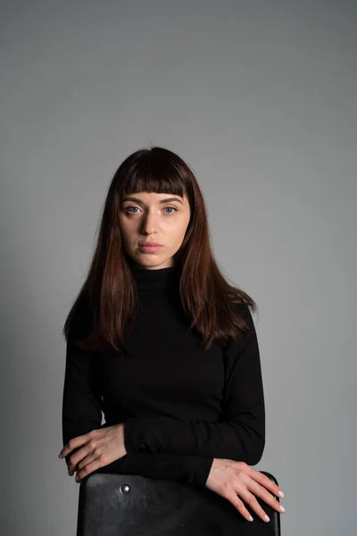

COSTA
Luis es alguien comprometido con su trabajo, domina el ingles, frances, espanol y chino Mandarin.
Henry es alguien muy carismatico al momento de explicarse, domina el ingles, espanol y frances
SIERRA

Ariana es una persona muy centrada lo que le permite escuchar atentamente a los turista y responder todas sus dudas. Domina el ingles y espanol.
Fernanda es alguien muy amable que tiene paciencia al momento de explicar. Habla aleman, espanol e ingles
SELVA
Josefina le gusta tomarse fotos con los turistas como recurso, tiene una capacidad extraordinaria para comunicarse. Habla espanol, ingles, aleman y chino

Rosa es muy observadora y ademas es amable con los ninos, Habla espanol e ingles